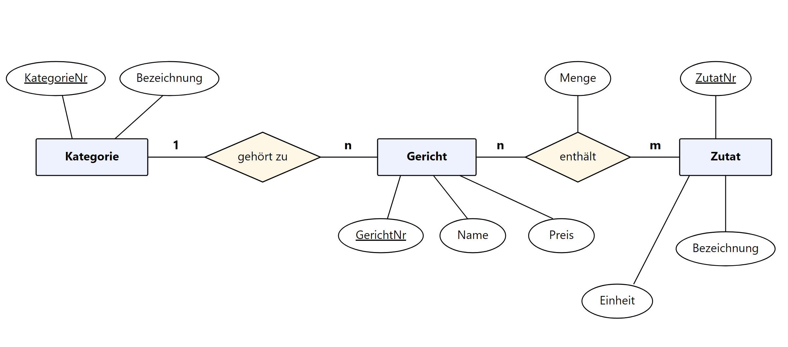

In der Datenbankentwicklung ist es wichtig, konzeptuelle Modelle (ER-Modelle) in logische Modelle (Relationenmodelle) zu überführen und daraus Relationenschemata abzuleiten. Hier lernst du, wie das geht.
Grundlegende Schritte:
1. Entitäten zu Tabellen
Jede Entität im ER-Modell wird zu einer Tabelle im Relationenmodell.
Beispiel: Entität „Schüler“ wird zur Tabelle „Schüler“.
2. Attribute zu Spalten
Die Attribute einer Entität werden zu Spalten in der entsprechenden Tabelle.
Beispiel: Schüler mit Attributen: ID, Vorname, Nachname, Geburtsdatum
Bei 1:1-Beziehungen kann der Primärschlüssel einer Seite als Fremdschlüssel auf der anderen Seite hinzugefügt werden. Wähle dafür die Seite, bei der der Partner immer existiert – dann bleibt die Fremdschlüsselspalte nie leer (siehe Merkhilfe und Beispiel 2 unten). Im Beispiel hat jeder Führerschein eine Person, aber nicht jede Person einen Führerschein.
Für m:n-Beziehungen wird eine neue Relation erstellt, die die Primärschlüssel beider beteiligten Relationen als Fremdschlüssel enthält. Die beiden Fremdschlüssel bilden zusammen ihren Primärschlüssel.
Das fertige Relationenschema wird um Datentypen erweitert.
Erweitertes Beispiel mit Datentypen: Schüler(SchülerID:INT, Vorname:VARCHAR(50), Nachname:VARCHAR(50)) Kurs(KursID:INT, Kursname:VARCHAR(10)) SchülerKurs(↑SchülerID:INT, ↑KursID:INT)
Zusammenfassung
Jede Entität wird zu einer Relation
Attribute werden zu Spalten
Primärschlüssel werden unterstrichen
Fremdschlüssel werden mit einem Pfeil nach oben (↑) dargestellt
1:n-Beziehungen führen zu Fremdschlüsseln auf der „n“-Seite
1:1-Beziehungen führen zu einem Fremdschlüssel auf einer der beiden Seiten
m:n-Beziehungen führen zu neuen Relationen
Zusammengesetzte Schlüssel werden gemeinsam unterstrichen
Datentypen müssen in der Regel angegeben werden
Praxisbezug: Vom Modell zur echten Datenbank
In Softwareprojekten ist das Relationenmodell die Bauanleitung für die Datenbank: Aus jeder Relation wird später ein CREATE TABLE-Befehl (Seite 1.11.1). Fachinformatiker*innen für Anwendungsentwicklung und Datenbankadministrator*innen besprechen das Modell mit den Auftraggebern, bevor programmiert wird – etwa bei einer Schulverwaltungssoftware, wie sie auch sächsische Schulen nutzen. Fehler, die hier auffallen, kosten fast nichts; ein falsch gesetzter Fremdschlüssel in einer laufenden Datenbank mit Millionen Zeilen dagegen viel Arbeit.
Die vier Beispiele aus 1.10 – Schritt für Schritt
Auf der Seite 1.10 sind aus vier Sachtexten vier ER-Modelle entstanden. Hier werden
genau diese Modelle in Relationenschemata überführt. Arbeite dabei immer in derselben Reihenfolge:
erst alle Entitäten zu Relationen machen, dann die Beziehungen einbauen.
Beispiel 1 einfach
Ausgangssituation: Das ER-Modell zum Schulkiosk aus 1.10 (zwei Entitäten, eine 1:n-Beziehung) soll in ein
Relationenmodell überführt werden.
Beispiel 1: Der Schulkiosk
Ausgangspunkt: das ER-Modell zum Schulkiosk.
Schritt
Was passiert
Zwischenstand
1. Entitäten
zwei Rechtecke → zwei Relationen
Lieferant(…), Produkt(…)
2. Attribute
jede Ellipse wird zu einer Spalte
Lieferant(LieferantNr, Name, Telefon)
3. Primärschlüssel
die unterstrichenen Attribute
Lieferant(LieferantNr, …)
4. Beziehung liefert (1:n)
Die 1 steht bei Lieferant, das n bei Produkt → LieferantNr wird
Fremdschlüssel in Produkt.
Produkt(…, ↑LieferantNr)
Warum in dieser Reihenfolge?
Entitäten zuerst: Jede Entität wird eine Relation. Warum? Erst wenn alle Relationen
stehen, kann man Fremdschlüssel auf sie verweisen lassen.
Attribute: Jede Ellipse wird genau eine Spalte. Warum? So geht keine Angabe aus dem ERM verloren.
Primärschlüssel: die unterstrichenen Attribute. Warum? Auf sie zeigen später die Fremdschlüssel.
Beziehung 1:n: keine neue Relation, sondern LieferantNr als Fremdschlüssel in Produkt.
Warum dort? Jedes Produkt hat genau einen Lieferanten, also passt genau ein Wert in jede Produktzeile.
Man sieht sofort, warum der Fremdschlüssel auf der n-Seite stehen muss: In jeder Produktzeile passt
genau eine Lieferantennummer. Umgekehrt müsste man in die Lieferantenzeile 1 die Werte
„101, 102“ schreiben – und das wäre nicht atomar und damit ein Verstoß gegen die
1. Normalform (siehe Seite 1.14).
Kontrolle: 2 Entitäten + 0 m:n-Beziehungen = 2 Relationen. Alle 6 Attribute des ERM stehen als Spalten im Modell,
dazu genau ein Fremdschlüssel. Jeder Wert in ↑LieferantNr (1, 1, 2) kommt als LieferantNr in der
Tabelle Lieferant vor – die referenzielle Integrität ist erfüllt.
Beispiel 2: Das Tierheim
Ausgangspunkt: das ER-Modell zum Tierheim mit zwei 1:n-Beziehungen und einer 1:1-Beziehung.
Beziehung
Überlegung
Ergebnis
betreut (Pflegekraft 1 : n Tier)
Das n steht bei Tier, also bekommt Tier den Fremdschlüssel.
Tier(…, ↑PersNr)
lebt in (Tier n : 1 Gehege)
Das n steht wieder bei Tier, also noch ein Fremdschlüssel in Tier.
Tier(…, ↑GehegeNr)
hat (Tier 1 : 1 Akte)
Beide Seiten sind möglich. Da eine Akte nie ohne Tier existiert, aber ein neu
aufgenommenes Tier durchaus kurz ohne Akte sein kann, kommt der Fremdschlüssel in die Akte.
Beide Varianten sind formal richtig. Entscheide nach dieser Frage:
Bei welcher der beiden Relationen ist sicher, dass es den Partner immer gibt?
Dort kommt der Fremdschlüssel hin, denn dann bleibt die Spalte nie leer.
Würde man hier ↑AktenNr in Tier schreiben, stünde bei jedem Tier, zu
dem noch keine Akte angelegt wurde, ein leeres Feld (NULL). Leere Felder verhindert man, wo es geht.
Zusatz für Interessierte: Bei einer echten 1:1-Beziehung kann man den Fremdschlüssel sogar
gleichzeitig zum Primärschlüssel machen – Akte(↑TierNr, Notizen).
Dann ist technisch garantiert, dass es zu einem Tier nie zwei Akten gibt.
Beispiel 3: Die Schulmensa (mit m:n-Beziehung)

Ausgangspunkt: das ER-Modell zur Schulmensa. An der Raute enthält hängt das
Beziehungsattribut Menge.
Schritt
Was passiert
Ergebnis
1. Entitäten
drei Rechtecke → drei Relationen
Kategorie, Gericht, Zutat
2. gehört zu (1:n)
Das n steht bei Gericht.
Gericht(…, ↑KategorieNr)
3. enthält (m:n)
Neue Relation mit beiden Fremdschlüsseln. Beide zusammen bilden den
Primärschlüssel – einzeln wäre keiner eindeutig, denn Mehl kommt in
vielen Gerichten vor und ein Gericht enthält viele Zutaten.
enthaelt(↑GerichtNr, ↑ZutatNr)
4. Beziehungsattribut
Menge hängt an der Raute, also kommt es in die neue Relation –
nicht in Gericht und nicht in Zutat.
Die Verbindungstabelle mit Daten – hier wird der Sinn sichtbar:
enthaelt
↑GerichtNr
↑ZutatNr
Menge
1 (Pfannkuchen)
7 (Mehl)
200
1 (Pfannkuchen)
3 (Milch)
300
1 (Pfannkuchen)
5 (Ei)
2
2 (Pizza)
7 (Mehl)
350
2 (Pizza)
9 (Tomaten)
400
Die Zutat Mehl steht in zwei Zeilen – einmal mit 200, einmal mit 350. Genau deshalb kann
Menge weder in Zutat noch in Gericht stehen: Der Wert gehört zum
Paar. Und die Kombination aus GerichtNr und ZutatNr kommt nur einmal vor – sie ist der
Primärschlüssel.
Beispiel 4: Das Ferienlager
Ausgangspunkt: das ER-Modell zum Ferienlager mit vier Beziehungen.
Vier Beziehungen wirken zunächst unübersichtlich. Geh sie deshalb einzeln durch und
notiere nach jeder Zeile den Zwischenstand.
Beziehung
Typ
Umsetzung
Betreuer leitet Gruppe
1:n
n steht bei Gruppe → Gruppe(…, ↑BetreuerNr)
Teilnehmer gehört zu Gruppe
n:1
n steht bei Teilnehmer → Teilnehmer(…, ↑GruppeNr)
Betreuer führt durch Workshop
1:n
n steht bei Workshop → Workshop(…, ↑BetreuerNr)
Teilnehmer nimmt teil Workshop
m:n
neue Relation Anmeldung mit beiden Fremdschlüsseln als zusammengesetztem
Primärschlüssel und den beiden Beziehungsattributen
Zweimal ↑BetreuerNr. Dass derselbe Primärschlüssel in zwei
verschiedenen Relationen als Fremdschlüssel auftaucht, ist kein Fehler, sondern die Umsetzung von zwei
verschiedenen Beziehungen.
Der Name der Verbindungsrelation.Anmeldung, nimmt_teil oder
TeilnehmerWorkshop – alle drei sind zulässig. Sprechende Namen sind besser lesbar.
Die vier Beispiele im Überblick
Beispiel
Entitäten
Beziehungen
Relationen im Modell
Warum diese Zahl?
1 Schulkiosk
2
1× 1:n
2
1:n erzeugt keine neue Relation
2 Tierheim
4
2× 1:n, 1× 1:1
4
weder 1:n noch 1:1 erzeugen neue Relationen
3 Schulmensa
3
1× 1:n, 1× m:n
4
die m:n-Beziehung bringt eine Relation dazu
4 Ferienlager
4
3× 1:n, 1× m:n
5
wieder eine zusätzliche Relation durch m:n
Hinweis: Selbstkontrolle vor der Abgabe
Hat jede Relation einen Primärschlüssel (unterstrichen)?
Stimmt die Faustformel oben mit meiner Anzahl an Relationen überein?
Steht jeder Fremdschlüssel auf der Seite, an der im ERM das n steht?
Gibt es zu jedem Fremdschlüssel eine Relation, in der er Primärschlüssel ist?
Ist jedes Attribut aus dem ERM genau einmal untergebracht – auch die an den Rauten?
Steht in keiner Spalte etwas, das mehrere Werte gleichzeitig enthalten müsste?
Der Rückweg: vom Relationenmodell zum ER-Modell
Oft liegt eine Datenbank schon vor – als Relationenmodell oder als SQL-Datei mit CREATE TABLE-Befehlen –
und du sollst verstehen, welches ER-Modell dahintersteckt, etwa um sie zu dokumentieren oder zu erweitern. Dann
läuft die Überführung rückwärts. Die Regeln sind dieselben wie auf dem Hinweg, nur umgekehrt gelesen.
Beispiel 5 komplex
Ausgangssituation: Die Musikschule hat ihre Datenbank von einer Firma bekommen. Überliefert ist nur
die SQL-Datei. Gesucht ist das ER-Modell für die Dokumentation.
CREATE TABLE Lehrkraft (
LehrkraftNr INTEGER PRIMARY KEY,
Name TEXT NOT NULL,
Telefon TEXT
);
CREATE TABLE Schueler (
SchuelerNr INTEGER PRIMARY KEY,
Name TEXT NOT NULL,
Geburtsdatum DATE,
LehrkraftNr INTEGER NOT NULL,
FOREIGN KEY (LehrkraftNr) REFERENCES Lehrkraft(LehrkraftNr)
);
CREATE TABLE Instrument (
InstrumentNr INTEGER PRIMARY KEY,
Bezeichnung TEXT NOT NULL
);
CREATE TABLE spielt (
SchuelerNr INTEGER,
InstrumentNr INTEGER,
Niveau TEXT,
PRIMARY KEY (SchuelerNr, InstrumentNr),
FOREIGN KEY (SchuelerNr) REFERENCES Schueler(SchuelerNr),
FOREIGN KEY (InstrumentNr) REFERENCES Instrument(InstrumentNr)
);
CREATE TABLE Schliessfach (
FachNr INTEGER PRIMARY KEY,
Etage INTEGER,
SchuelerNr INTEGER UNIQUE,
FOREIGN KEY (SchuelerNr) REFERENCES Schueler(SchuelerNr)
);
Verbindungsrelation suchen. In spielt besteht der Primärschlüssel aus genau den
beiden Fremdschlüsseln SchuelerNr und InstrumentNr. Warum ist das eine m:n-Beziehung?
Eine Schülerin kann in mehreren Zeilen stehen (mehrere Instrumente), ein Instrument ebenso (mehrere Schüler) –
nur das Paar ist eindeutig. Ergebnis: Raute spielt zwischen Schueler und Instrument, Kardinalität m:n,
Beziehungsattribut Niveau (es gehört zum Paar: Ella spielt Klavier fortgeschritten, Gitarre als Anfängerin).
Entitäten bilden. Übrig bleiben vier Relationen → vier Entitäten:
Lehrkraft (LehrkraftNr, Name, Telefon), Schueler (SchuelerNr, Name, Geburtsdatum),
Instrument (InstrumentNr, Bezeichnung), Schliessfach (FachNr, Etage). Die Fremdschlüsselspalten
fehlen bewusst.
Fremdschlüssel in Schueler.LehrkraftNr ist nicht eindeutig – viele Schüler
können dieselbe Lehrkraft haben. Die Seite mit dem Fremdschlüssel ist die n-Seite: Lehrkraft 1 : n Schueler.
NOT NULL verrät zusätzlich: Jede Schülerin hat immer eine Lehrkraft.
Verb: unterrichtet.
Fremdschlüssel in Schliessfach.SchuelerNr ist hier UNIQUE: Jede
SchuelerNr darf nur in einem Fach stehen. Ein Schüler hat also höchstens ein Fach, ein Fach höchstens einen
Schüler → 1:1. Ohne UNIQUE wäre es 1:n gewesen. Verb: nutzt.
Probe. Faustformel: 4 Entitäten + 1 m:n-Beziehung = 5 Relationen – passt. Wendet man auf das
ERM den Hinweg an, entsteht wieder genau das Schema oben.
Ergebnis:
Beziehung
Lesesatz hin
Lesesatz zurück
Kardinalität
Attribute
Lehrkraft unterrichtet Schueler
Eine Lehrkraft unterrichtet mehrere Schüler.
Ein Schüler hat eine Lehrkraft.
1:n
–
Schueler spielt Instrument
Ein Schüler spielt mehrere Instrumente.
Ein Instrument wird von mehreren Schülern gespielt.
m:n
Niveau
Schueler nutzt Schliessfach
Ein Schüler nutzt höchstens ein Fach.
Ein Fach wird von höchstens einem Schüler genutzt.
1:1
–
Falle – was das Schema nicht verrät: Die Namen der Beziehungen („unterrichtet“ könnte auch
„betreut“ heißen) und manche Pflichtangaben stehen nicht im SQL-Code. Dass Schliessfach.SchuelerNr
NULL sein darf, bedeutet: Es gibt freie Fächer. Achte außerdem auf den Unterschied zu einer Relation, die zwar zwei
Fremdschlüssel, aber einen eigenen Primärschlüssel hat (z. B. eine Vorstellung mit FilmNr und SaalNr): Sie
kann eine eigenständige Entität sein. Entscheidend ist die Bedeutung, nicht nur die Zahl der Fremdschlüssel.
Datentypen in relationalen Datenbanken
Datentypen definieren die Art der Daten, die in einer Spalte gespeichert werden können.
Datentyp
Beschreibung
Beispiel
INT
Ganze Zahlen
Alter, Anzahl der Bestellungen
FLOAT
Dezimalzahlen
Preis, Gewicht
CHAR
Zeichenkette fester Länge
Geschlecht (m/w/d)
VARCHAR
Zeichenkette variabler Länge
Name, Adresse
DATE
Datum
Geburtsdatum, Bestelldatum
BOOLEAN
Wahrheitswert (wahr/falsch)
Ist Kunde aktiv?
Das Wichtigste
Merkhilfe für die Beziehungen
1:n → keine neue Relation. Der Primärschlüssel der 1-Seite
wandert als Fremdschlüssel auf die n-Seite. Eselsbrücke:
„Der Fremdschlüssel steht dort, wo das n steht.“
1:1 → keine neue Relation. Der Fremdschlüssel darf auf beide Seiten,
sinnvoll ist die Seite, bei der der Partner immer existiert – sonst entstehen leere Felder.
m:n → immer eine neue Relation. Sie erhält beide
Primärschlüssel als Fremdschlüssel; diese bilden zusammen den zusammengesetzten
Primärschlüssel. Attribute an der Raute wandern in diese neue Relation.
Faustformel: Anzahl der Relationen = Anzahl der Entitäten + Anzahl der
m:n‑Beziehungen. Damit kannst du deine Lösung vor der Abgabe schnell gegenprüfen.
Rückweg in vier Schritten
Verbindungsrelationen erkennen. Besteht der Primärschlüssel einer Relation vollständig
aus Fremdschlüsseln auf zwei andere Relationen, ist sie keine Entität, sondern eine m:n-Beziehung.
Ihre übrigen Spalten werden Beziehungsattribute.
Entitäten bilden. Alle anderen Relationen werden Entitäten. Ihre Spalten ohne Fremdschlüssel
werden Attribute, der Primärschlüssel wird zum unterstrichenen Schlüsselattribut.
Einzelne Fremdschlüssel übersetzen. Jeder übrige Fremdschlüssel ist eine Beziehung zwischen
seiner Relation und der Relation, auf die er verweist. Die Relation mit dem Fremdschlüssel ist die n-Seite
– es sei denn, der Fremdschlüssel ist eindeutig (UNIQUE oder selbst Primärschlüssel): Dann ist es eine 1:1-Beziehung.
Fremdschlüssel streichen und Beziehungen benennen. Im ERM gibt es keine Fremdschlüssel. Die Rauten
brauchen ein Verb, das im Schema nicht steht – du musst es aus der Bedeutung erschließen.
Grundaufgaben
Aufgabe 1.11.1: Vom ERM zum Relationenmodell AFB II
Überführe die drei ER-Modelle, die du in Aufgabe 1.10.5 (Online-Bibliothek, Sportstudio,
Autowerkstatt) gezeichnet hast, jeweils in ein vollständiges Relationenmodell. Gib
Primärschlüssel, Fremdschlüssel und Datentypen an und prüfe dein Ergebnis mit der
Checkliste zur Selbstkontrolle.